Summary
This experiment investigates tomato greenhouse yield. Central composite design to maximize fruit yield and minimize blossom end rot by tuning temperature, humidity, and irrigation frequency.
The design varies 3 factors: day temp (C), ranging from 22 to 32, humidity pct (%), ranging from 50 to 85, and irrigation freq (per_day), ranging from 2 to 6. The goal is to optimize 2 responses: yield kg (kg/plant) (maximize) and ber pct (%) (minimize). Fixed conditions held constant across all runs include variety = roma, light hours = 16.
A Central Composite Design (CCD) was selected to fit a full quadratic response surface model, including curvature and interaction effects. With 3 factors this produces 22 runs including center points and axial (star) points that extend beyond the factorial range.
Quadratic response surface models were fitted to capture potential curvature and factor interactions. The RSM contour plots below visualize how pairs of factors jointly affect each response.
Key Findings
For yield kg, the most influential factors were irrigation freq (60.5%), humidity pct (20.0%), day temp (19.5%). The best observed value was 5.59 (at day temp = 27, humidity pct = 67.5, irrigation freq = 4).
For ber pct, the most influential factors were humidity pct (40.7%), irrigation freq (33.5%), day temp (25.8%). The best observed value was 1.8 (at day temp = 27, humidity pct = 67.5, irrigation freq = 4).
Recommended Next Steps
- Run confirmation experiments at the predicted optimal settings to validate the model.
- Consider whether any fixed factors should be varied in a future study.
Experimental Setup
Factors
| Factor | Low | High | Unit |
|---|
day_temp | 22 | 32 | C |
humidity_pct | 50 | 85 | % |
irrigation_freq | 2 | 6 | per_day |
Fixed: variety = roma, light_hours = 16
Responses
| Response | Direction | Unit |
|---|
yield_kg | ↑ maximize | kg/plant |
ber_pct | ↓ minimize | % |
Configuration
{
"metadata": {
"name": "Tomato Greenhouse Yield",
"description": "Central composite design to maximize fruit yield and minimize blossom end rot by tuning temperature, humidity, and irrigation frequency"
},
"factors": [
{
"name": "day_temp",
"levels": [
"22",
"32"
],
"type": "continuous",
"unit": "C"
},
{
"name": "humidity_pct",
"levels": [
"50",
"85"
],
"type": "continuous",
"unit": "%"
},
{
"name": "irrigation_freq",
"levels": [
"2",
"6"
],
"type": "continuous",
"unit": "per_day"
}
],
"fixed_factors": {
"variety": "roma",
"light_hours": "16"
},
"responses": [
{
"name": "yield_kg",
"optimize": "maximize",
"unit": "kg/plant"
},
{
"name": "ber_pct",
"optimize": "minimize",
"unit": "%"
}
],
"settings": {
"operation": "central_composite",
"test_script": "use_cases/97_tomato_greenhouse/sim.sh"
}
}
Experimental Matrix
The Central Composite Design produces 22 runs. Each row is one experiment with specific factor settings.
| Run | day_temp | humidity_pct | irrigation_freq |
|---|
| 1 | 27 | 67.5 | 4 |
| 2 | 32 | 50 | 6 |
| 3 | 22 | 85 | 2 |
| 4 | 27 | 99.4505 | 4 |
| 5 | 27 | 67.5 | 4 |
| 6 | 17.8713 | 67.5 | 4 |
| 7 | 27 | 67.5 | 0.348516 |
| 8 | 27 | 67.5 | 4 |
| 9 | 32 | 85 | 2 |
| 10 | 36.1287 | 67.5 | 4 |
| 11 | 27 | 67.5 | 4 |
| 12 | 27 | 35.5495 | 4 |
| 13 | 27 | 67.5 | 4 |
| 14 | 22 | 50 | 6 |
| 15 | 27 | 67.5 | 4 |
| 16 | 32 | 50 | 2 |
| 17 | 27 | 67.5 | 7.65148 |
| 18 | 32 | 85 | 6 |
| 19 | 27 | 67.5 | 4 |
| 20 | 22 | 50 | 2 |
| 21 | 22 | 85 | 6 |
| 22 | 27 | 67.5 | 4 |
Step-by-Step Workflow
1
Preview the design
$ doe info --config use_cases/97_tomato_greenhouse/config.json
2
Generate the runner script
$ doe generate --config use_cases/97_tomato_greenhouse/config.json \
--output use_cases/97_tomato_greenhouse/results/run.sh --seed 42
3
Execute the experiments
$ bash use_cases/97_tomato_greenhouse/results/run.sh
4
Analyze results
$ doe analyze --config use_cases/97_tomato_greenhouse/config.json
5
Get optimization recommendations
$ doe optimize --config use_cases/97_tomato_greenhouse/config.json
6
Multi-objective optimization
With 2 competing responses, use --multi to find the best compromise via Derringer–Suich desirability.
$ doe optimize --config use_cases/97_tomato_greenhouse/config.json --multi
7
Generate the HTML report
$ doe report --config use_cases/97_tomato_greenhouse/config.json \
--output use_cases/97_tomato_greenhouse/results/report.html
Features Exercised
| Feature | Value |
|---|
| Design type | central_composite |
| Factor types | continuous (all 3) |
| Arg style | double-dash |
| Responses | 2 (yield_kg ↑, ber_pct ↓) |
| Total runs | 22 |
Analysis Results
Generated from actual experiment runs using the DOE Helper Tool.
Response: yield_kg
Top factors: irrigation_freq (60.5%), humidity_pct (20.0%), day_temp (19.5%).
ANOVA
| Source | DF | SS | MS | F | p-value |
|---|
| Source | DF | SS | MS | F | p-value |
| day_temp | 4 | 1.0626 | 0.2657 | 0.231 | 0.9139 |
| humidity_pct | 4 | 1.4944 | 0.3736 | 0.325 | 0.8542 |
| irrigation_freq | 4 | 13.8261 | 3.4565 | 3.009 | 0.0783 |
| Lack | of | Fit | 2 | 0.1133 | 0.0566 |
| Pure | Error | 7 | 8.0401 | | |
| Error | 9 | 8.1534 | 1.1486 | | |
| Total | 21 | 24.5366 | 1.1684 | | |
Pareto Chart
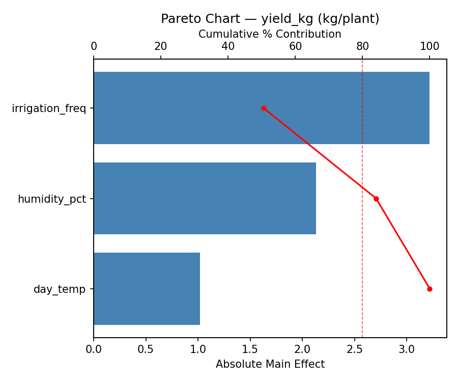
Main Effects Plot
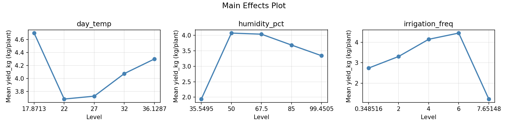
Normal Probability Plot of Effects
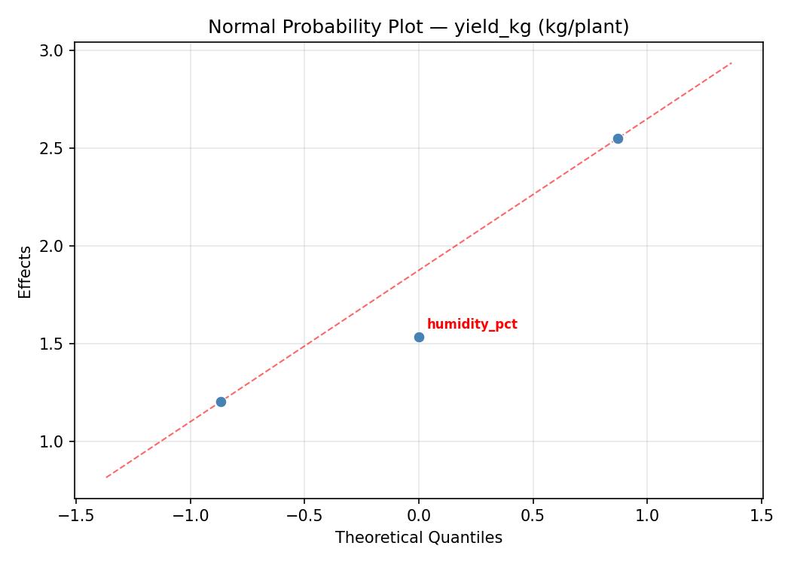
Half-Normal Plot of Effects
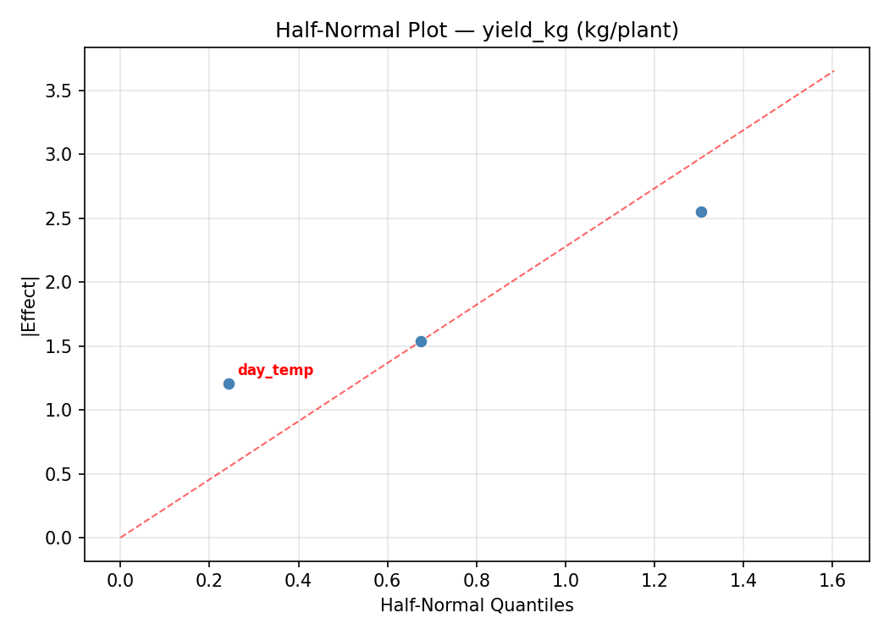
Model Diagnostics
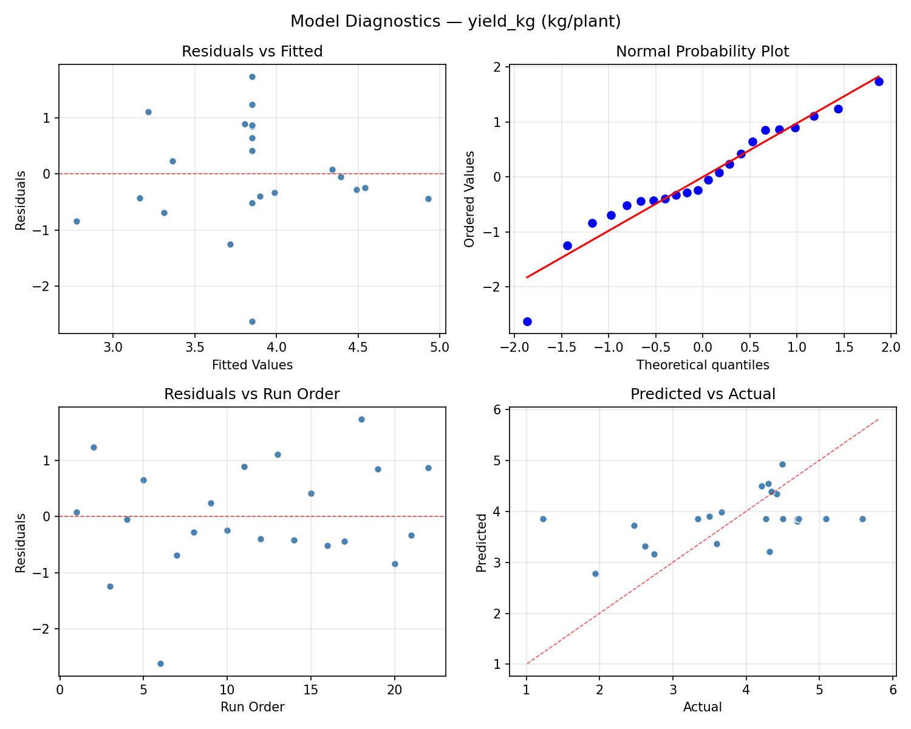
Response: ber_pct
Top factors: humidity_pct (40.7%), irrigation_freq (33.5%), day_temp (25.8%).
ANOVA
| Source | DF | SS | MS | F | p-value |
|---|
| Source | DF | SS | MS | F | p-value |
| day_temp | 4 | 29.0215 | 7.2554 | 0.484 | 0.7473 |
| humidity_pct | 4 | 59.5607 | 14.8902 | 0.994 | 0.4584 |
| irrigation_freq | 4 | 30.9182 | 7.7295 | 0.516 | 0.7263 |
| Lack | of | Fit | 2 | 87.4191 | 43.7095 |
| Pure | Error | 7 | 104.8388 | | |
| Error | 9 | 192.2578 | 14.9770 | | |
| Total | 21 | 311.7582 | 14.8456 | | |
Pareto Chart
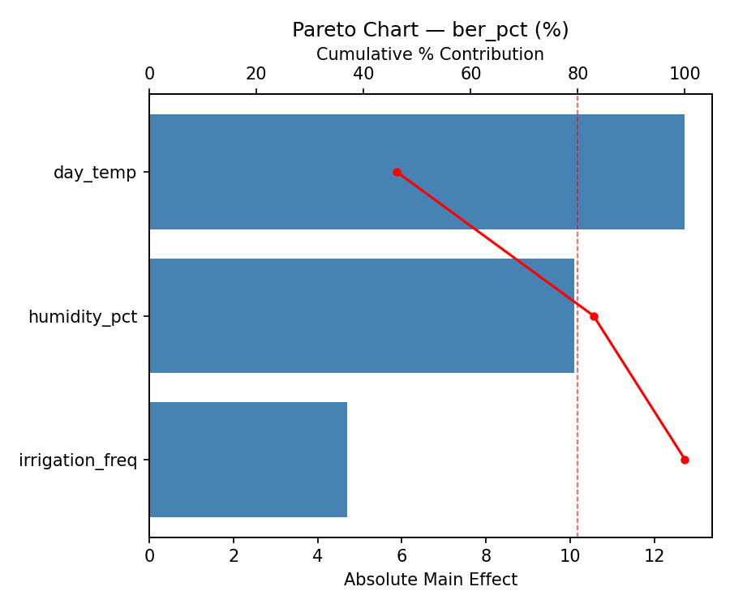
Main Effects Plot

Normal Probability Plot of Effects
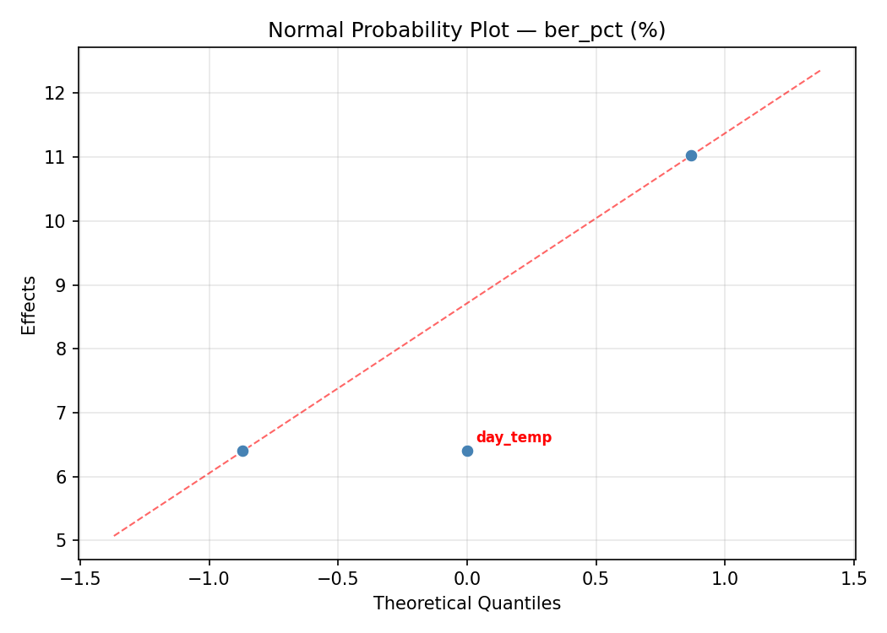
Half-Normal Plot of Effects
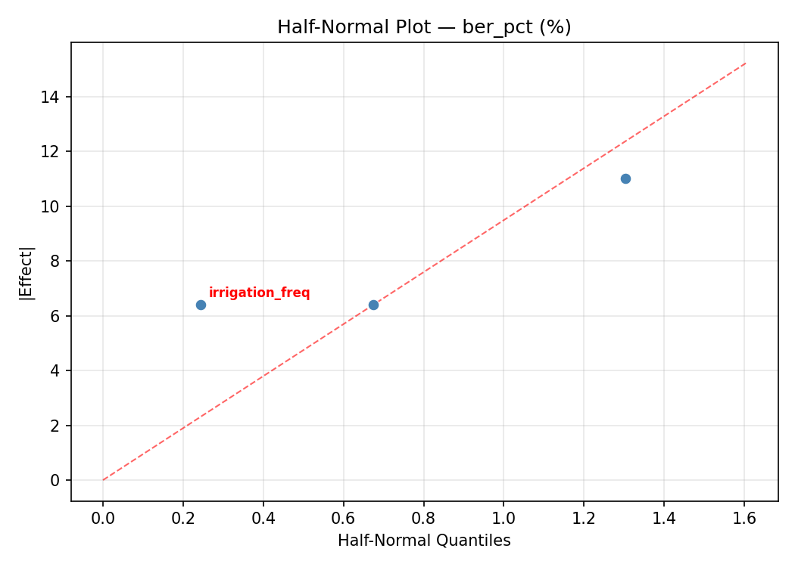
Model Diagnostics
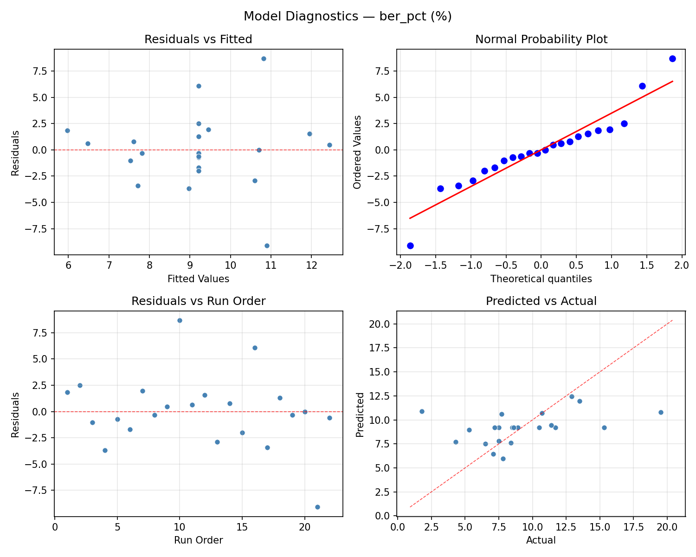
Response Surface Plots
3D surfaces fitted with quadratic RSM. Red dots are observed data points.
ber pct day temp vs humidity pct
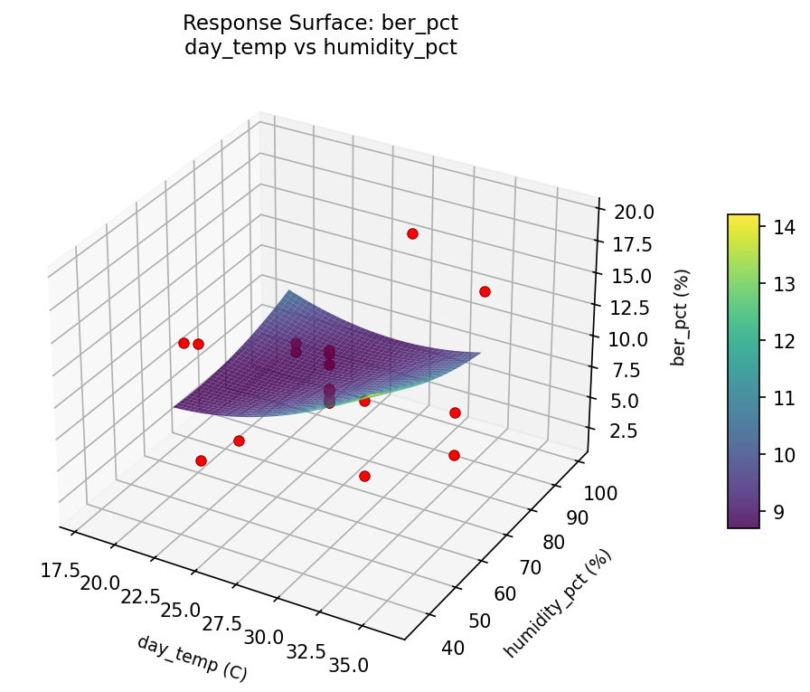
ber pct day temp vs irrigation freq
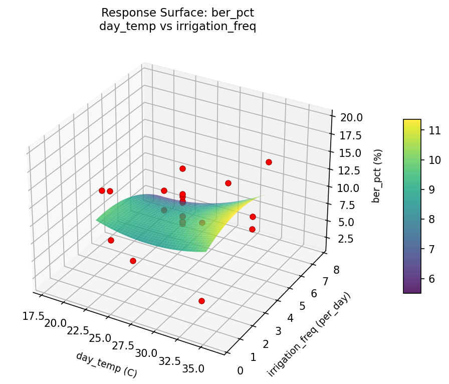
ber pct humidity pct vs irrigation freq
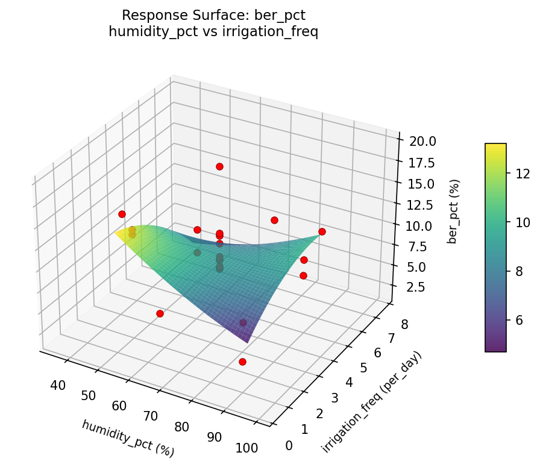
yield kg day temp vs humidity pct

yield kg day temp vs irrigation freq
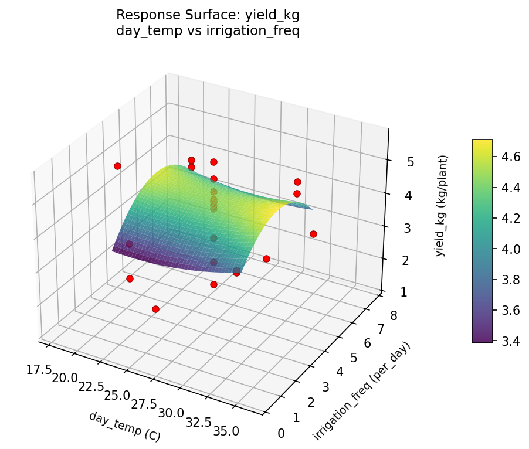
yield kg humidity pct vs irrigation freq
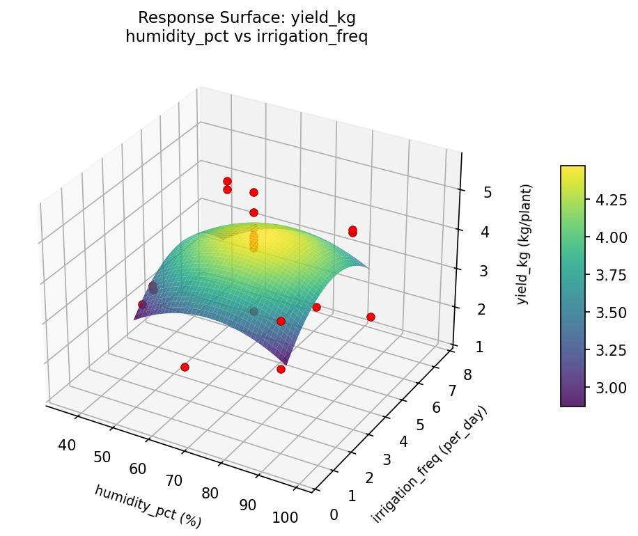
Multi-Objective Optimization
When responses compete, Derringer–Suich desirability finds the best compromise.
Each response is scaled to a 0–1 desirability, then combined via a weighted geometric mean.
Overall Desirability
D = 0.7640
Per-Response Desirability
| Response | Weight | Desirability | Predicted | Dir |
|---|
yield_kg |
1.5 |
|
4.49 0.7252 4.49 kg/plant |
↑ |
ber_pct |
1.0 |
|
4.30 0.8261 4.30 % |
↓ |
Recommended Settings
| Factor | Value |
|---|
day_temp | 27 C |
humidity_pct | 67.5 % |
irrigation_freq | 7.65148 per_day |
Source: from observed run #17
Trade-off Summary
Sacrifice = how much worse than single-objective best.
| Response | Predicted | Best Observed | Sacrifice |
|---|
ber_pct | 4.30 | 1.80 | +2.50 |
Top 3 Runs by Desirability
| Run | D | Factor Settings |
|---|
| #18 | 0.7415 | day_temp=27, humidity_pct=67.5, irrigation_freq=4 |
| #11 | 0.7331 | day_temp=32, humidity_pct=50, irrigation_freq=6 |
Model Quality
| Response | R² | Type |
|---|
ber_pct | 0.1599 | linear |
Full Multi-Objective Output
============================================================
MULTI-OBJECTIVE OPTIMIZATION
Method: Derringer-Suich Desirability Function
============================================================
Overall desirability: D = 0.7640
Response Weight Desirability Predicted Direction
---------------------------------------------------------------------
yield_kg 1.5 0.7252 4.49 kg/plant ↑
ber_pct 1.0 0.8261 4.30 % ↓
Recommended settings:
day_temp = 27 C
humidity_pct = 67.5 %
irrigation_freq = 7.65148 per_day
(from observed run #17)
Trade-off summary:
yield_kg: 4.49 (best observed: 5.59, sacrifice: +1.10)
ber_pct: 4.30 (best observed: 1.80, sacrifice: +2.50)
Model quality:
yield_kg: R² = 0.3271 (linear)
ber_pct: R² = 0.1599 (linear)
Top 3 observed runs by overall desirability:
1. Run #17 (D=0.7640): day_temp=27, humidity_pct=67.5, irrigation_freq=7.65148
2. Run #18 (D=0.7415): day_temp=27, humidity_pct=67.5, irrigation_freq=4
3. Run #11 (D=0.7331): day_temp=32, humidity_pct=50, irrigation_freq=6
Full Analysis Output
=== Main Effects: yield_kg ===
Factor Effect Std Error % Contribution
--------------------------------------------------------------
irrigation_freq 3.0958 0.2305 60.5%
humidity_pct 1.0250 0.2305 20.0%
day_temp 1.0000 0.2305 19.5%
=== ANOVA Table: yield_kg ===
Source DF SS MS F p-value
-----------------------------------------------------------------------------
day_temp 4 1.0626 0.2657 0.231 0.9139
humidity_pct 4 1.4944 0.3736 0.325 0.8542
irrigation_freq 4 13.8261 3.4565 3.009 0.0783
Lack of Fit 2 0.1133 0.0566 0.049 0.9522
Pure Error 7 8.0401 1.1486
Error 9 8.1534 1.1486
Total 21 24.5366 1.1684
=== Summary Statistics: yield_kg ===
day_temp:
Level N Mean Std Min Max
------------------------------------------------------------
17.8713 1 4.5000 0.0000 4.5000 4.5000
22 4 3.9175 0.5814 3.3400 4.4900
27 12 3.8642 1.3741 1.2300 5.5900
32 4 3.5000 0.7504 2.4700 4.2700
36.1287 1 4.2100 0.0000 4.2100 4.2100
humidity_pct:
Level N Mean Std Min Max
------------------------------------------------------------
35.5495 1 4.3200 0.0000 4.3200 4.3200
50 4 3.3950 0.7383 2.4700 4.2700
67.5 12 3.8617 1.3744 1.2300 5.5900
85 4 4.0225 0.4580 3.6000 4.4900
99.4505 1 4.4200 0.0000 4.4200 4.4200
irrigation_freq:
Level N Mean Std Min Max
------------------------------------------------------------
0.348516 1 1.9400 0.0000 1.9400 1.9400
2 4 3.9425 0.4246 3.5000 4.3400
4 12 4.3258 0.8579 2.6200 5.5900
6 4 3.4750 0.8315 2.4700 4.4900
7.65148 1 1.2300 0.0000 1.2300 1.2300
=== Main Effects: ber_pct ===
Factor Effect Std Error % Contribution
--------------------------------------------------------------
humidity_pct 4.5500 0.8215 40.7%
irrigation_freq 3.7500 0.8215 33.5%
day_temp 2.8833 0.8215 25.8%
=== ANOVA Table: ber_pct ===
Source DF SS MS F p-value
-----------------------------------------------------------------------------
day_temp 4 29.0215 7.2554 0.484 0.7473
humidity_pct 4 59.5607 14.8902 0.994 0.4584
irrigation_freq 4 30.9182 7.7295 0.516 0.7263
Lack of Fit 2 87.4191 43.7095 2.918 0.1197
Pure Error 7 104.8388 14.9770
Error 9 192.2578 14.9770
Total 21 311.7582 14.8456
=== Summary Statistics: ber_pct ===
day_temp:
Level N Mean Std Min Max
------------------------------------------------------------
17.8713 1 8.5000 0.0000 8.5000 8.5000
22 4 9.6000 5.6059 4.3000 15.3000
27 12 9.9833 3.3892 7.1000 19.5000
32 4 7.1000 4.5497 1.8000 12.9000
36.1287 1 7.5000 0.0000 7.5000 7.5000
humidity_pct:
Level N Mean Std Min Max
------------------------------------------------------------
35.5495 1 7.7000 0.0000 7.7000 7.7000
50 4 10.6250 4.4297 6.5000 15.3000
67.5 12 10.0250 3.3673 7.1000 19.5000
85 4 6.0750 4.7822 1.8000 12.9000
99.4505 1 7.8000 0.0000 7.8000 7.8000
irrigation_freq:
Level N Mean Std Min Max
------------------------------------------------------------
0.348516 1 10.7000 0.0000 10.7000 10.7000
2 4 6.9500 4.9061 1.8000 13.5000
4 12 9.8000 3.4064 7.1000 19.5000
6 4 9.7500 5.1958 4.3000 15.3000
7.65148 1 7.5000 0.0000 7.5000 7.5000
Optimization Recommendations
=== Optimization: yield_kg ===
Direction: maximize
Best observed run: #18
day_temp = 27
humidity_pct = 67.5
irrigation_freq = 4
Value: 5.59
RSM Model (linear, R² = 0.0303, Adj R² = -0.1313):
Coefficients:
intercept +3.8523
day_temp +0.0333
humidity_pct +0.2186
irrigation_freq +0.0425
RSM Model (quadratic, R² = 0.4064, Adj R² = -0.0389):
Coefficients:
intercept +4.2842
day_temp +0.0333
humidity_pct +0.2186
irrigation_freq +0.0425
day_temp*humidity_pct +0.4788
day_temp*irrigation_freq +0.1663
humidity_pct*irrigation_freq -0.6463
day_temp^2 -0.0805
humidity_pct^2 -0.4225
irrigation_freq^2 -0.1450
Curvature analysis:
humidity_pct coef=-0.4225 concave (has a maximum)
irrigation_freq coef=-0.1450 concave (has a maximum)
day_temp coef=-0.0805 negligible curvature
Notable interactions:
humidity_pct*irrigation_freq coef=-0.6463 (antagonistic)
day_temp*humidity_pct coef=+0.4788 (synergistic)
Predicted optimum (from quadratic model, at observed points):
day_temp = 32
humidity_pct = 85
irrigation_freq = 2
Predicted value: 4.8045
Surface optimum (via L-BFGS-B, quadratic model):
day_temp = 32
humidity_pct = 85
irrigation_freq = 2
Predicted value: 4.8045
Model quality: Weak fit — consider adding center points or using a different design.
Factor importance:
1. humidity_pct (effect: 2.0, contribution: 39.2%)
2. day_temp (effect: 1.7, contribution: 32.5%)
3. irrigation_freq (effect: 1.5, contribution: 28.3%)
=== Optimization: ber_pct ===
Direction: minimize
Best observed run: #21
day_temp = 27
humidity_pct = 67.5
irrigation_freq = 4
Value: 1.8
RSM Model (linear, R² = 0.1785, Adj R² = 0.0416):
Coefficients:
intercept +9.2091
day_temp -0.5647
humidity_pct -0.3508
irrigation_freq +1.8308
RSM Model (quadratic, R² = 0.2811, Adj R² = -0.2580):
Coefficients:
intercept +9.2209
day_temp -0.5647
humidity_pct -0.3508
irrigation_freq +1.8308
day_temp*humidity_pct +1.0625
day_temp*irrigation_freq -0.5625
humidity_pct*irrigation_freq -1.0375
day_temp^2 -0.4409
humidity_pct^2 -0.1409
irrigation_freq^2 +0.5641
Curvature analysis:
irrigation_freq coef=+0.5641 convex (has a minimum)
day_temp coef=-0.4409 concave (has a maximum)
humidity_pct coef=-0.1409 concave (has a maximum)
Notable interactions:
day_temp*humidity_pct coef=+1.0625 (synergistic)
humidity_pct*irrigation_freq coef=-1.0375 (antagonistic)
day_temp*irrigation_freq coef=-0.5625 (antagonistic)
Predicted optimum (from linear model, at observed points):
day_temp = 27
humidity_pct = 67.5
irrigation_freq = 7.65148
Predicted value: 12.5516
Surface optimum (via L-BFGS-B, linear model):
day_temp = 32
humidity_pct = 85
irrigation_freq = 2
Predicted value: 6.4628
Model quality: Weak fit — consider adding center points or using a different design.
Factor importance:
1. irrigation_freq (effect: 15.2, contribution: 69.8%)
2. humidity_pct (effect: 4.4, contribution: 20.0%)
3. day_temp (effect: 2.2, contribution: 10.3%)